Гидроизоляция наливных полов, шпаклевки, защитные покрытия
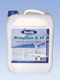
Нибогрунд G17Nibogrund G 17
Адгезионная и грунтовочная дисперсия
- многофункциональная
- не содержит растворителей
- водорастворимая
- электропроводимость регулируется
Для подготовки основания по стандарту DIN 18 365. Предназначена для нанесения на впитывающие и не впитывающие поверхности, такие как бесшовные полы, черновые бетонные поверхности, природный и искусственный камень, керамическая плитка и т.п., перед выравниванием и шпаклевкой. Применяется также в качестве адгезионного слоя на уже имеющихся шпаклёвочных и выравнивающих слоях при ремонте старых зданий и спортивных сооружений.
Разбавляется водой в соотношении 1:1, при нанесении на сильно впитывающие цементные поверхности разбавляется водой в соотношении 1:3. GISCODE D 1
Расход: прим. 75 грамм концентрата /м2
Хранение: в сухом и прохладном месте, беречь от мороза.
Упаковка: канистра 3 кг , 10 кг , 20 кг, бочка 150 кг
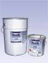
Нибогрунд Е30Nibogrund E 30
Двухкомпонентная грунтовка и влагоизолирующий слой на основе эпоксидной смолы. Не содержит растворителей. Может наноситься валиком или шпателем. Обладает повышенной адгезией. Грунтовка для бетона, цементных, ангидридных, магнезиальных и ксилолитовых (древесно-каменных) монолитных полов и многих других покрытий, испытывающих повышенную нагрузку. Может применяться для изоляции восходящей капиллярной влаги или остаточной влажности, не превышающей 4,5 СМ - %, на цементных и бетонных полах.
Giscode RE 1
Расход: в качестве грунтовки - 200-300 г/м2
в качестве гидроизоляционного слоя - ок. 500 г/м2
Упаковка: Комп. А - ведро 5,33 кг, Комп. В - канистра 3,67 кг
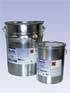
Нибогрунд E336Nibogrund E 336
Двухкомпонентная грунтовка и гидроизолирующий слой на основе эпоксидной смолы. Не содержит растворителей. Наносится шпателем. Обладает повышенной адгезией. Грунтовка для бетона, цементных, ангидридных, магнезиальных и ксилолитовых (древесно-каменных) монолитных полов и многих других покрытий, испытывающих повышенную нагрузку. Может применяться для изоляции восходящей капиллярной влаги или остаточной влажности, не превышающей 7,5 СМ - %, на цементных и бетонных полах. Не пригодна для изоляции восходящей капиллярной влаги при устройстве ангидридных и магнезиальных полов.
Giscode RE 1
Расход: в качестве грунтовки - 200-300 г/м2
в качестве гидроизоляционного слоя - ок. 500 г/м2
Упаковка: Комп. А - банка 10 кг, Комп. В - банка 6 кг
Эпоксан FBA
Epoxan FBA
2-компонентный материал на основе эпоксидной смолы. Не содержит растворителей. Устойчив к низким температурам и солям оттаивания. Применяется в областях, подверженных высокой химической нагрузке.
Для завершающего слоя на пылящих основаниях, для повышения износостойкости минеральных поверхностей, а также для защиты основания от проникновения в него жидкостей. Защищает основания от агрессивных к бетону веществ, таких как бензин и дизельное топливо, сточных вод, растворов кислот и многих других химикатов. Применяется для грунтовки впитывающих минеральных поверхностей. Может окрашиваться пигментной пастой Epoxan. Испаряющаяся влага не оставляет на Эпоксан FBA водяных пятен.
Компонент А: Giscode RE 1, Компонент В: Giscode RE 3
Расход: в качестве напольного покрытия 0,7 - 1,0 кг/м2
в качестве грунтовки/завершающего слоя 0,15 - 0,25 кг/ м2
Упаковка: Комп. А - банка 6 кг, Комп. В - банка 2,4 кг
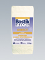
Нибоплан ДиректNiboplan Direct
Быстро затвердевающая шпаклевка на цементной основе. Для внутренних работ. Эластичная, с низким внутренним напряжением. Предназначена для шпаклевания, выравнивания и нивелирования бесшовных полов, цементных полов быстрого высыхания и черновых покрытий из бетона. Наносится за приём слоем с толщиной от 1 до 10 мм. Время высыхания 4 часа при 18 градусах Цельсия. На большинстве оснований используется без грунтовки.
Giscode ZP 1
GEV-EMICODE EC 1
Расход: ок. 1,5 кг/м2 /1мм слоя
Упаковка: мешок 25 кг
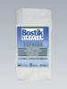
Нибоплан ЭкспрессNiboplan Express
Быстро отвердевающая шпаклевка на цементной основе. Для внутренних работ. Само растекающаяся, с низким внутренним напряжением. Предназначена для шпаклевания, выравнивания и нивелирования бесшовных полов, цементных полов быстрого высыхания и черновых покрытий из бетона. Наносится за один приём слоем с толщиной от 1 до 10 мм. Время высыхания 3-4 часа.
Giscode ZP 1
GEV - EMICODE EC 1
Расход: ок. 1,5 кг/м2/1мм слоя
Упаковка: мешок 25 кг
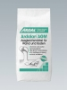
Ардалан AGMArdalan AGM
Выравнивающий раствор для стен и полов. Для внутренних и наружных работ. Низкое содержание солей хромой кислоты соответствует нормам TRGS 613.
Универсальный, обогащенный полимерами ремонтный раствор для выравнивания бесшовных полов (стяжек), бетонных покрытий, лестничных ступеней и поверхностей стен. Может применяться на подогреваемых полах.
Толщина слоя:
2- 10 мм - без добавок
10- 20 мм - смешанный с 50% кварцевого песка (зернистость 0-3 мм)
20- 30 мм - смешанный со 100% песка для бесшовных полов (зернистость 0- 8 мм)
Giscode ZP 1
Расход: прим. 1,6 кг /м2 / 1 мм слоя
Хранение: в сухом и прохладном месте
Упаковка: мешок 25 кг
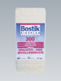
Нибоплан 300Niboplan 300
Шпаклевка и нивелирная масса на цементной основе. Для внутренних работ. Максимальная толщина слоя 20 мм.
Низкое содержание солей хромовой кислоты по нормам TRGS 613. Саморастекающаяся шпаклевка с низким внутренним напряжением для шпаклевания, сглаживания и нивелирования бесшовных полов, цементных полов быстрого высыхания и черновых покрытий из бетона. Может применяться также в качестве тонкослойного и выравнивающего покрытия для чернового бетона. При толщине слоя 10- 20 мм следует смешивать с кварцевым песком зернистостью 0 - 4 мм.
Giscode ZP 1
Расход: ок. 1,5 кг/м2 /1мм слоя
Упаковка: мешок 25 кг
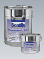
Нибоксан МультиNiboxan Multi
2-компонентное эпоксидное покрытие. Непластифицированное, без растворителей, жестко-эластичное, мало вязкое, износостойкое. Готовое к нанесению валиком покрытие и завершающий слой для защиты бетона, железобетона и предварительно напряженного железобетона от воздействия различных химикатов и сточных вод. Применяется для производственных площадей, складских помещений, гаражей, мастерских, школ и т.п. Выдерживает большие механические и химические нагрузки.
Расход: в качестве шпаклевки при слое 1 мм - ок. 1,4 кг/м2/1мм слоя
в качестве завершающего слоя - 0,4 - 1,0 кг/м2
Хранение: в сухом и прохладном месте, беречь от мороза.
Упаковка: Комп. А - банка 25 кг, Комп. В - банка 5 кг
Нибодар Мульти
Nibodur Multi
2-компонентная полиуретановое покрытие. Пигментируемое. Не содержит растворителей. Саморастекающееся, деаэрирующееся. Устойчиво к механическим нагрузкам и воздействию химикатов. Предназначено для защиты бетона, литого асфальта, латексфальта, дерева, стали, алюминия и т.п. от воздействия химикатов и сточных вод. Применяется для производственных площадей, складских помещений, гаражей, мастерских, школ и т.д. Перекрывает трещины до 0,4 мм. Обладает высокой прочностью, выдерживает движение вилочных погрузчиков.
Расход: 1,3-4 кг/м2
Хранение: в сухом и прохладном месте, беречь от мороза.
Упаковка: Комп. А - банка 25 кг, Комп. В - банка 5 кг
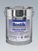
Ниботоп МультиNibotop Multi
Прозрачный, затвердевающий под воздействием влаги 1-компонентный полиуретановый покрывной лак. Жёсткоэластичный и износостойкий. Предназначен для нанесения на Нибоксан Мульти и Нибодар Мульти с целью повышения их механической и химической стойкости. Хорошо сохраняет цвет, износостойкий, улучшает оптические свойства благодаря шелковисто-матовой поверхности.
Расход: ок. 80-100 г/м2
Хранение: в сухом и прохладном месте, беречь от мороза.
Упаковка: банка 10 кг
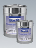
Нибоксан ДекорNiboxan Decor
2-компонентное вяжущее средство на основе эпоксидной смолы. Непластифицированное, без растворителей. Для внутренних работ. Средство для изготовления декоративного эпоксидного раствора путем смешивания с цветными кварцами, гранитным гравием или другими декоративными добавками. Наносится на цементные основания. Применяется для выставочных и торговых залов, офисных помещений и т.п. Устойчиво к механическим нагрузкам и воздействию химических веществ.
Расход: зависит от применения
Хранение: в сухом и прохладном месте, беречь от мороза.
Упаковка: Комп. А - банка 16,66 кг, Комп. В - банка 8,34 кг
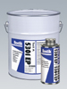
Бостик 5301 EPBostik 5301 EP
2-компонентная грунтовка на основе эпоксидной смолы, не содержащая растворителей и наполнителей. Проверена на соответствие стандарту DIN EN 858-1:1993. Низковязкая грунтовка для всех цементных оснований. Для улучшения сцепления между основанием и средствами Бостик 5302 ЕР или Бостик 5304 ЕР.
Расход: ок. 200-400 г/м2
Хранение: в сухом и прохладном месте, беречь от мороза.
Упаковка: Комп. А - банка 35 кг, Комп. В - банка 0,75 кг
Бостик 5302 EP
Bostik 5302 EP
2-компонентное защитное покрытие бетона и металла на основе эпоксидной смолы, не содержащее растворителей. Обладает очень высокой устойчивостью к воздействию химических веществ. Проверено на соответствие стандарту DIN EN 858-1:1993 для защиты внутренней поверхности отстойников лёгких жидкостей (бензин, мазут и т.д.) для очистки сточных вод. Обеспечивает долговечную защиту от щелочей, сточных вод, фекалий, минеральных масел, жиров, нефтепродуктов, алифатических растворителей и т.п.
Толщина наносимого слоя 100-500 мкм.
Расход: ок. 250-400 г/м2
Хранение: в сухом и прохладном месте, беречь от мороза.
Упаковка: Комп. А - банка 5,25 кг, Комп. В - банка 0,75 кг
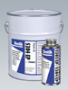
Бостик 5304 EPBostik 5304 EP
2-компонентное защитное покрытие бетона и металла на основе эпоксидной смолы, не содержащее растворителей. Сильновязкое, армировано синтетическими волокнами. Перекрывает микротрещины. Обладает очень высокой устойчивостью к воздействию химических веществ. Проверено на соответствие стандарту DIN EN 858-1:1993 для защиты внутренней поверхности отстойников лёгких жидкостей (бензин, мазут и т.д.) для очистки сточных вод. Обеспечивает долговечную защиту от щелочей, сточных вод, фекалий, минеральных масел, жиров, нефтепродуктов, алифатических растворителей и т.п. Перекрывает микротрещины на бетонных конструкциях. Может наноситься на поверхности потолков.
Расход: ок. 500-900 г/м2
Хранение: в сухом и прохладном месте, беречь от мороза.
Упаковка: Комп. А - банка 7,5 кг, Комп. В - банка 0,75 кг
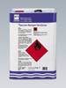
Очиститель ЭпоксанEpoxan Reiniger
Растворитель. Для очистки от присохших остатков битума и не затвердевших частиц реактивных смол.
Хранение: в сухом и прохладном месте, беречь от мороза.
Упаковка: канистра 5 кг